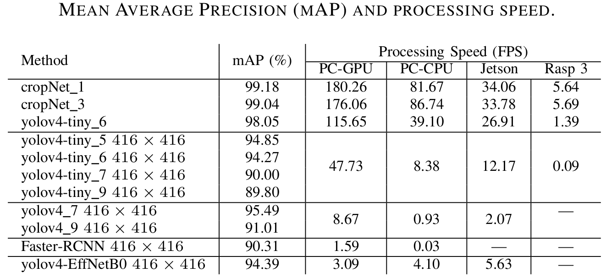

Fast Traffic Sign Detection for Two-Way Roads using Detachable Onboard Cameras
Maurı́cio B. de Paula
Cláudio R. Jung
Outline
- Introduction
- Related work
- Proposed approach
- Experimental results
- Conclusion
The proposed approach
- Definition of the ROIs
- Lightweight CNN for TSD
- Real-Time Traffic Sign Detection
Definition of the ROIs

Definition of the ROIs
 \( \mathbf{x}_w=(x,y,z)^T \color{gray}{\Longrightarrow} \mathbf{u} = (u,v)^T \color{gray}{\Longrightarrow} \mathbf{u} = {f}({x}) \)
\( \mathbf{x}_w=(x,y,z)^T \color{gray}{\Longrightarrow} \mathbf{u} = (u,v)^T \color{gray}{\Longrightarrow} \mathbf{u} = {f}({x}) \)
Definition of the ROIs

Rectangular region \( r \) in WCS: \( \mathbf{w}_z = \left( p_h + \frac{p_d}{2}, \delta_y, \delta_z \right)^T \)
The proposed approach
- Definition of the ROIs
- Lightweight CNN for TSD
- Real-Time Traffic Sign Detection
Lightweight CNN for TSD
| Network |
Size |
| Proposed network |
394Kb |
| Mobilenet-v2 |
14Mb |
| YOLOv4-tiny |
6Mb |

The proposed approach
- Definition of the ROIs
- Lightweight CNN for TSD
- Real-Time Traffic Sign Detection
Real-Time Traffic Sign Detection
Detection and tracking mode
Experimental results
- Dataset
- Training details
- Quantitative Evaluation
Our Dataset
Training set
| Traffic sign |
#images |
| No overtaking |
939 |
| Left curve |
608 |
| Right curve |
744 |
| 60 km/h |
189 |
| 80 km/h |
195 |
| Trucks right |
167 |
| Bridge ahead |
102 |
Total of 2,944 images
Testing set
- Eleven (11) full HD videos
- Recorded with different placement settings.
- Extrinsic params. different for each video.
- Instrisic params. obteained offline.
Experimental results
- Dataset
- Training details
- Quantitative Evaluation
Training details

Experimental results
- Dataset
- Training details
- Quantitative Evaluation
Quantitative Evaluation

Conclusion
- Present a framework for Brazilian TSD with flexible camera setup.
- Explore a calibrated camera to reduce the search area.
- Reduce the background complexity.
- The relative size of the TS presents small variations.
- Allow the use of lightweight CNNs.